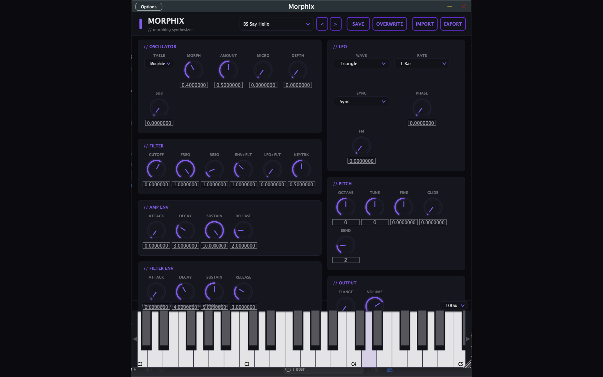
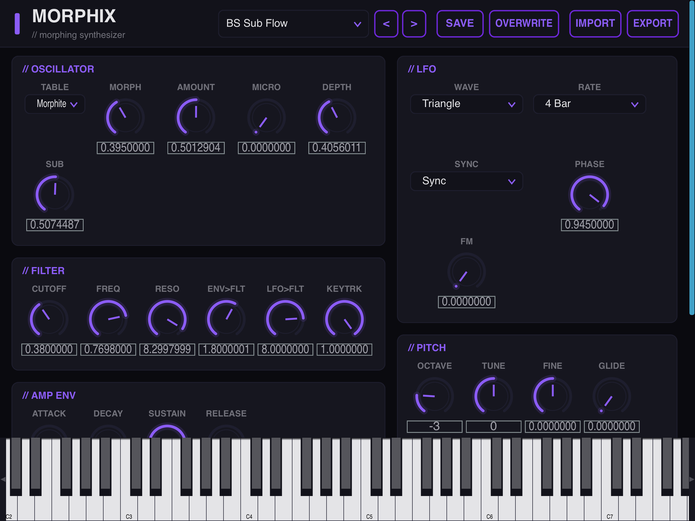
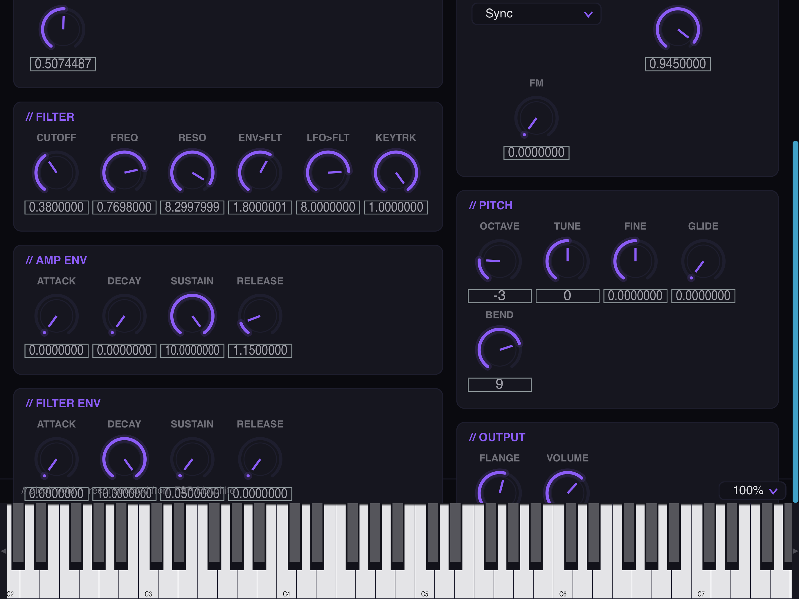

Morphix is a polyphonic morphing wavetable synthesizer — a from-scratch reconstruction of the lost 2005 FSR Morphite. Its architecture, parameters, and complete 64-patch factory bank were reverse-engineered from the original binary and rebuilt with JUCE as a modern, multi-architecture plugin in the Aleph Void visual language.
Morphix mirrors the original Morphite signal path parameter-for-parameter, then ships it everywhere a modern host runs — with a JUCE-free DSP core that's tested in CI on every build.
A single morph control sweeps continuously through the wavetable, smoothly blending one waveform into the next — the heart of the Morphite sound, faithfully re-implemented.
Cutoff, resonance, dedicated filter envelope amount, and key-tracking — driven by its own ADSR for everything from soft sweeps to snappy plucks.
Independent amplitude and filter envelopes, plus a tempo-syncable LFO routable to morph and cutoff for evolving, in-time movement.
A built-in flanger on the output adds width and motion, finishing the chain with the same modulation character as the original.
The complete original bank, recovered from the binary and shipped as standard Steinberg .vstpreset files — also exposed as host programs. Import and export your own from the UI.
VST3 and a Standalone app everywhere, plus AUv3 on macOS and iOS/iPadOS. Load it in Logic, GarageBand, Ableton Live, Cubase, AUM — any AU / VST3 host.
One morph oscillator into a state-variable filter, an amp stage, and a stereo flanger — with two envelopes and a tempo-synced LFO doing the modulation. The same path the original Morphite used, re-derived from its parameters.
Drop the VST3 or AUv3 into your plugin folder, or run the Standalone app on its own.
Open the preset browser and pick from the 64 recovered factory programs.
Play, then sweep the morph control — by hand or with the LFO — to move through the wavetable.
Export the result as a .vstpreset to reload anywhere, in any VST3 host.
The Morphix editor in the Aleph Void visual language — as a plugin in your DAW on macOS, and as an AUv3 on iPhone and iPad. Click any shot to enlarge.



Morphix is a single, self-contained instrument plugin — no extra runtime, no account, no network.
Builds are on the way. Pick your platform below — we'll light these up the moment each release is ready.
Want to know when a build drops? Email contact@alephvoid.com and we'll let you know.
Morphix is a polyphonic morphing wavetable synthesizer plugin. It's a from-scratch reconstruction of the FSR Morphite, a 2005 Windows VST whose source code was lost — its architecture, parameters, and full 64-patch factory bank were reverse-engineered from the original binary and re-implemented with JUCE as a modern plugin.
A single morph control sweeps continuously through a wavetable, smoothly blending one waveform into the next instead of switching abruptly. You can move it by hand or drive it with the tempo-synced LFO for evolving, animated timbres — that motion is the signature of the original instrument.
VST3 and a Standalone app on every platform, plus AUv3 on macOS and iOS/iPadOS. Builds target macOS (universal arm64 + x86_64), iOS / iPadOS, Windows (x64 + ARM64), and Linux (x86_64 + aarch64).
Yes. Morphix ships as an AUv3 on iOS and iPadOS (iOS 13+), so you can host it in GarageBand, AUM, Cubasis, and other AUv3 hosts — or run the Standalone app.
Yes — the complete original 64-patch bank, recovered from the binary and shipped as standard Steinberg .vstpreset files and exposed as host programs. You can also import and export your own .vstpreset files straight from the plugin's UI.
No. Morphix does no networking and collects nothing — everything happens locally on your device. There's no account, no telemetry, and no remote code. See the Privacy Policy for the full breakdown.
Open an issue on our GitHub issue tracker, or head to the Support page to email us. Include your OS version, host / DAW, plugin format, and steps to reproduce.